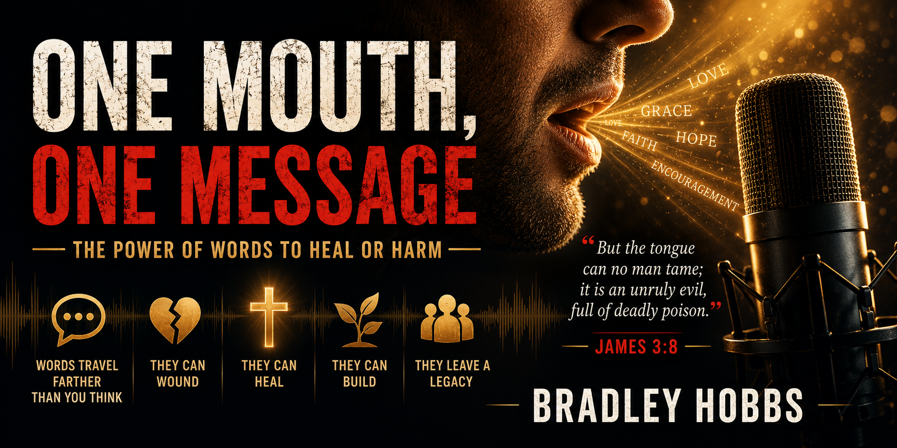

Words travel farther than people realize. A sentence can wound for years or heal in moments. Every conversation carries influence. Every voice carries responsibility.
"Words travel farther than people realize."
"One conversation can become a chain reaction."
"The tongue cannot be tamed, but surrendered."
Every chapter explores moments where words carried consequences beyond imagination. Step into stories of healing, conviction, restoration, and spiritual truth.
Open Table of Contents